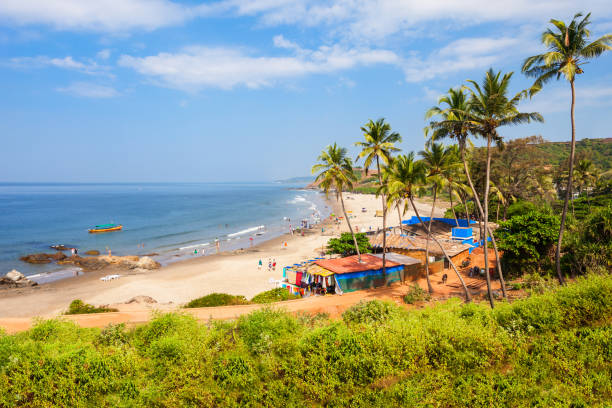
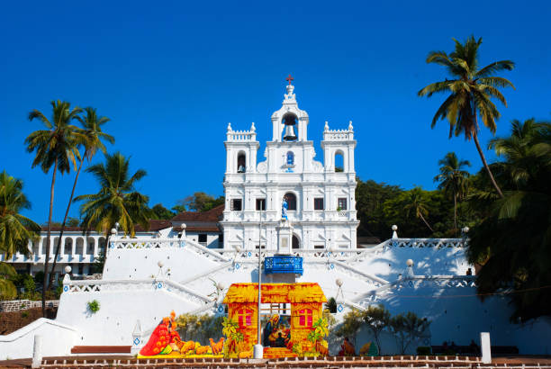
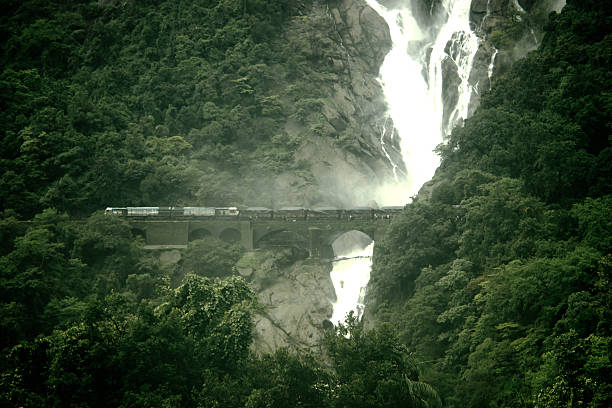
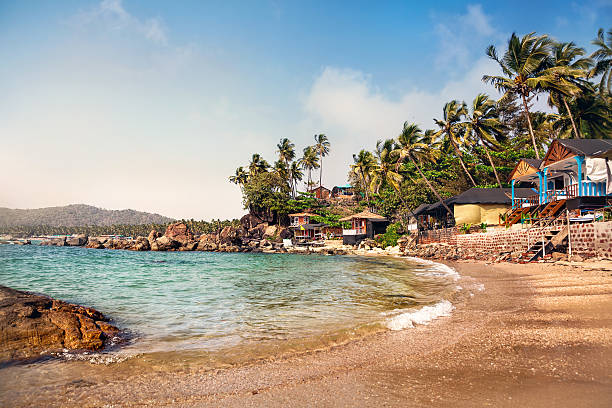
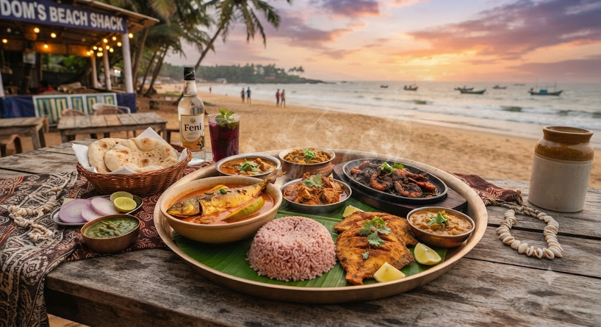

01
Baga & Calangute
The lively hub of North Goa — famous for water sports, beach shacks, vibrant flea markets, and bustling seaside nightlife.

Discover the pearl of the Orient — golden Arabian Sea coastlines, UNESCO Baroque cathedrals, thunderous Dudhsagar falls, coastal culinary fusions, and the soulful susegad rhythm of life.
Explore Goa ↓Goa is a coastal enclave along the Konkan belt, internationally celebrated for its sun-drenched beaches, Indo-Portuguese architecture, organic spice plantations, and hospitable spirit.
From the lively beach shacks and vibrant night markets of North Goa to the peaceful, secluded coves of South Goa and the historical Latin Quarters of Fontainhas in Panaji, Goa offers an eclectic seaside haven.
Celebrated shores, Portuguese heritage quarters, and cascading forest waterfalls in Goa.

The lively hub of North Goa — famous for water sports, beach shacks, vibrant flea markets, and bustling seaside nightlife.

UNESCO World Heritage site featuring 16th-century Manueline and Baroque cathedrals, including the Basilica of Bom Jesus and Se Cathedral.

Meaning "Sea of Milk" — a majestic 310-meter four-tiered waterfall cascading through lush rainforests in Bhagwan Mahaveer Sanctuary.

A serene, crescent-shaped bay in South Goa, framed by coconut palm groves, calm swimming waters, and colorful cliffside huts.
Goan cuisine is a coastal fusion of Konkani spices and Portuguese culinary heritage, celebrated for kokum, toddy vinegar, fresh seafood, and coconut milk.

A colorful three-day street carnival celebrated before Lent, featuring grand King Momo parades, brass bands, and street dances.
The Latin Quarter of Panaji with narrow lanes lined with bright yellow and terracotta Portuguese villas and glazed Azulejos tiles.
Goa's vibrant spring harvest festival featuring traditional Konkani folk dances such as Ghode Modni, Fugdi, and colorful temple floats.
A relaxed, contented, and peaceful way of life that values afternoon siestas, community gatherings, and living in harmony with nature.
Discover all 28 states, local food specialties, and centuries of living traditions.
← Back to All States